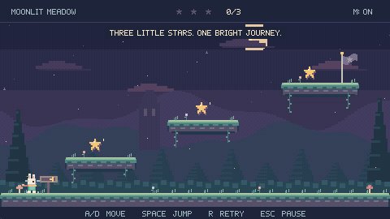

Local preview · GitHub Markdown API output with local GitHub-style CSS · README source
One Game. Three Prompts. Three Iterations.
← GameFactory Agents · Source and playable releases · Media provenance
Little Star Jump is a one-screen Godot platformer: three stars unlock a flag, then the player can replay. These three real requests produced v0.2.0, v0.2.1 and v0.2.2. Each follow-up kept the existing game context instead of repeating the original requirements.
The earlier prototype is preserved separately. The first showcased request explicitly asks to improve that prototype; it is not presented as a blank-slate creation prompt.
| Stage | Native scene checks | Rendered checks | Result |
|---|---|---|---|
| 01 · v0.2.0 | 29/29 | 34/34 | Polished playable game |
| 02 · v0.2.1 | 32/32 | 37/37 | 25% shorter jump airtime |
| 03 · v0.2.2 | 41/41 | 47/47 | Rideable moving platform |
What GameFactory actually did
GameFactory's deterministic CLI selected context, planned bounded tasks, exported external work, validated submitted changesets, applied source changes, ran native QA, tracked evidence and enforced review/handoff boundaries. One external Codex operator authored the code, operated the tools, supplied same-agent review and packaged/published the demo. There was no independent multi-agent execution or autonomous visual acceptance.
This presentation reuses those completed records. It does not rerun production, add mechanics or invoke a new Director plan. Only demonstration recording and documentation checks were performed for the showcase.
Iteration 01 — Create
Exact user prompt
Improve Little Star Jump into a small but polished, complete-feeling 2D pixel-art platformer.
Keep the gameplay simple. Focus on visual quality, responsive controls, animations, and overall polish.
Use GameFactory V2's existing production workflow to plan, implement, evaluate, and deliver the playable game autonomously.
Preserve the previous working version. Include the original request, actual workflow evidence, and final game output in the GitHub demo case study.
Verbatim text. This is the actual request retained in the execution record, not a rewritten historical quotation. The README quotes only its exact first sentence. “Create” names the first showcased polished output; a working prototype already existed.
Result and implementation
The polished release evolved from the preserved prototype. It added original procedural pixel art, character/world animation, sound, forgiving controls and the full title → play → pause → victory → replay flow. Its final production pass also corrected headless audio allocation and toast readability.
Changed files: project.godot; scripts/main.gd, player.gd, pixel.gd, world.gd, sound.gd; tests/gameplay_test.gd, capture.gd across the polish passes.

Verified then: 29/29 native scene checks and 34/34 rendered checks. The Windows executable was also played through the real flow. These are historical release results, not freshly rerun production or a new framework regression.
Preserved result: v0.2.0 source · commit bbf0d01 · Windows download · verification snapshot.
Prompt → processing → execution → changes → QA → output
- Processing: Director plan binds the request to scoped work.
- Execution and changed files: guarded production apply; external Codex supplied the code.
- QA: actual run → native run
TRUN-9cf20335-4b84-4f5d-a819-268d14ef9584→ evidenceEVID-0014. - Review: same-agent result ingestion; no independent model worker was launched.
- Handoff: HANDOFF-d79bb4c5-5093-a85a-3067-92fbea7b3050 recorded a verified bounded change at that release. Historical freshness must not be read as current-source acceptance after later iterations.
- Output: versioned source and Windows release above; GIFs were recorded later from the same preserved executable hashes.
Iteration 02 — Improve
Exact user prompt
The jumping feels too floaty. Make it snappier and more responsive.
Verbatim text. This is the actual request retained in the execution record, not a rewritten historical quotation.
Result and implementation
The controller changed ascent gravity from 670 to 1000 px/s², descent gravity to 1500 px/s², launch speed from 285 to 350 px/s and release cutoff from 115 to 100 px/s. Measured airtime fell from 0.867 to 0.650 s; height stayed near 64 pixels. Tests retained the original route, coyote time and buffering.
Changed files: scripts/player.gd, tests/gameplay_test.gd, project.godot.

| Before — v0.2.0 | After — v0.2.1 |
|---|---|
 |
|
Both recordings use the same tap-then-held-jump input sequence. These are live recordings, not frame-synchronized laboratory captures. The quantitative timing comes from the retained 60 Hz scene tests.
Verified then: 32/32 native scene checks and 37/37 rendered checks. The Windows executable was also played through the real flow. These are historical release results, not freshly rerun production or a new framework regression.
Preserved result: v0.2.1 source · commit c929012 · Windows download · verification snapshot.
Prompt → processing → execution → changes → QA → output
- Processing: Director plan binds the request to scoped work.
- Execution and changed files: guarded production apply; external Codex supplied the code.
- QA: actual run → native run
TRUN-34c2e5b7-328f-4671-9aa2-cda19794d5c9→ evidenceEVID-0015. - Review: same-agent result ingestion; no independent model worker was launched.
- Handoff: HANDOFF-0f3c8fe8-102f-d04f-c9bc-8b2acf6e0da8 recorded a verified bounded change at that release. Historical freshness must not be read as current-source acceptance after later iterations.
- Output: versioned source and Windows release above; GIFs were recorded later from the same preserved executable hashes.
Iteration 03 — Extend
Exact user prompt
Add a moving platform that I can jump onto.
Verbatim text. This is the actual request retained in the execution record, not a rewritten historical quotation.
Result and implementation
A new AnimatableBody2D supplies one-way landing, smooth lateral travel and automatic rider carry. The main scene starts, pauses, stops and resets it. A queued star overlap discovered after restarting from the middle ledge is now rejected using actual collision bounds. The existing player controller is unchanged.
Changed files: scripts/moving_platform.gd, scripts/main.gd, tests/gameplay_test.gd, project.godot; generated Godot UID metadata in the delivery checkout.

Verified then: 41/41 native scene checks and 47/47 rendered checks. The Windows executable was also played through the real flow. These are historical release results, not freshly rerun production or a new framework regression.
Preserved result: v0.2.2 source · commit 60c873b · Windows download · verification snapshot.
Prompt → processing → execution → changes → QA → output
- Processing: Director plan binds the request to scoped work.
- Execution and changed files: guarded production apply; external Codex supplied the code.
- QA: actual run → native run
TRUN-683ceecf-4d48-40db-b529-b780577a831c→ evidenceEVID-0016. - Review: same-agent result ingestion; no independent model worker was launched.
- Handoff: HANDOFF-f6717127-ccd4-7391-8ebb-801f4ecb18a0 recorded a verified bounded change at that release. Historical freshness must not be read as current-source acceptance after later iterations.
- Output: versioned source and Windows release above; GIFs were recorded later from the same preserved executable hashes.
Limits and retained failures
Passing assertions cover their declared scene flows. Owner enjoyment, artistic approval, subjective audio listening, other operating systems and gamepad/touch were not certified. The Windows executables are unsigned. Framework-wide regression was not rerun for this presentation.
Failed capture/test attempts remain identified in the demo case studies. The polish work corrected audio cleanup and input-test timing; the jump update first showed the old controller failing the new timing thresholds; the moving-platform update exposed the queued star event after restart. See original production case, jump tuning and moving platform.
Machine-readable prompt/release/evidence index. Public demo receipts already redact local paths; the proprietary framework source and private coursework stay excluded.